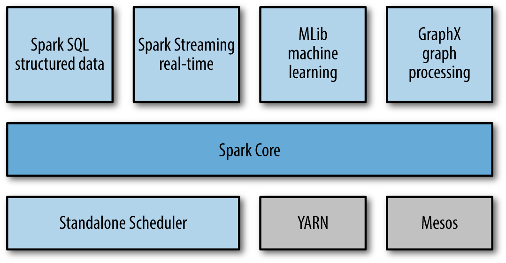

Again, if you haven't already checked out my page on BRUTUS or PEPPER, take a look at BRUTUS before reading on by clicking here.
My team at Jupiter Group and I have been working on the framework to implement deep learning into our algorithm-trading robots. To do this, we researched many industry-popular big data technologies such as Hadoop and Spark, and many of the supplementary compenents that can be used in conjunction with those programs.
We decided, based on the requirements of our data and our algorithms, that Apache Spark would be our most valuable tool.

Apache Spark is capable of molding a very customizable input bottleneck, by which you can sculpt your code according to the distributed file system that Apache and Hadoop use to calculate big data calculations across. For our particular goals, which I will describe below, we are using SparkSQL to house our data and then using SparkMLib (a machine learning library feature offered by Apache) to further our deep learning system.
The goal is quite simple: Instead of building multiple bots that trade the forex market, we want to build one single bot that STUDIES the forex market and can subsequently build IT'S OWN algorithm-trading bot based on the results of it's own analysis.
More specifically, we want to take every function that has comprised each bot and give each function an array of possible parameters. Then, we want to make those functions classes in Scala or Java, and make each possible combination of parameters a function. Then we will craft RDDs to run our classes and associated functions across our SQL database, which will simply be price data (Open, High, Low, Close). By molding our code like this, we are preparing for integration to Spark and the subsequent processing power it will provide.
Spark is bleeding-edge technology in the big data world, and we could not be more excited to see what the results of our endeavor bring.
Our deep learning research program has been officially dubbed:
Project Polaris

Some of the programs used: